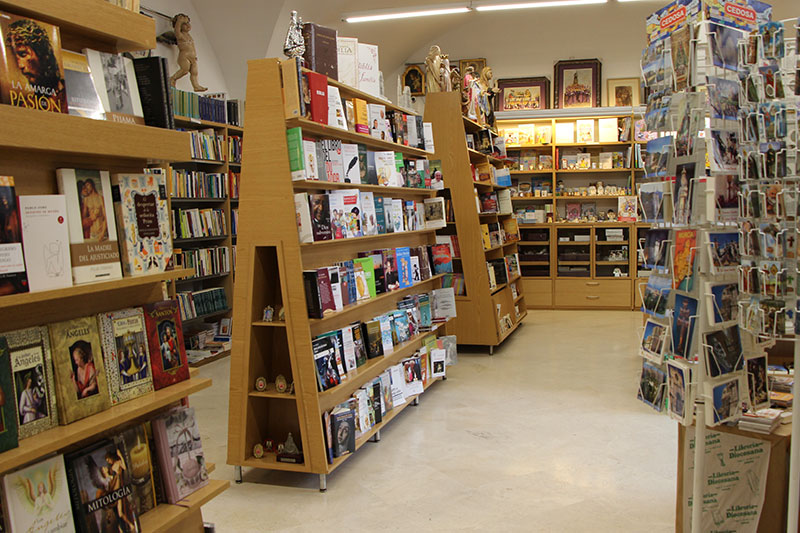

La Librería Friki

Bienvenido,

¿Qué tema quieres?
Bienvenido,
¿Qué tema quieres?
El Día Internacional del Libro es una conmemoración celebrada cada 23 de abril a nivel mundial con el objetivo de fomentar la lectura, la industria editorial y la protección de la propiedad intelectual por medio del derecho de autor. Desde 1988, es una celebración internacional promovida por la UNESCO.
Fue natural que la Conferencia General de la UNESCO, celebrada en París en 1995, decidiera rendir un homenaje universal a los libros y autores en esta fecha, alentando a todos, y en particular a los jóvenes, a descubrir el placer de la lectura y a valorar las irreemplazables contribuciones de aquellos quienes han impulsado el progreso social y cultural de la humanidad. Respecto a este tema, la UNESCO creó el Día Mundial del Libro y del Derecho de Autor, así como el Premio UNESCO de Literatura Infantil y Juvenil Pro de la Tolerancia.
El 15 de junio de 1989 se inició en varios países, y en 2010 la celebración ya había alcanzado más de cien. Link a Wikipedia